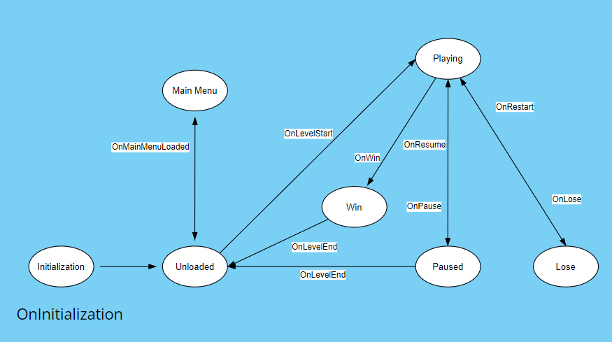

Overview
About two months ago (2023 october-ish), I decided to work on a 6 months plan to finish as many hyper casual games as possible. The sole purpose is to learn and experience the process of finishing and publishing games as fast as possible before moving on to larger scoped projects. I am documenting the entire process along the way to keep track of how long and where I am spending time in development. By the end I aim to be able to make finished hyper casual games in less than a week.
Faller
Will make the github repo public after publishing to Google Console.
Why I made this game
As a programmer I enjoy implementing ideas that I find interesting but as a result I kept building a repository of projects that were not finished games. At this point I could implement anything that I could imagine using code but I did not have any exprience finishing games so I came up with a plan. The plan was to experience the process of finishing games as efficiently as possible, which means to minimize the amount of time spent on game mechanics/art/audio/music/UI and maximise the time spent on finishing games. The Hyper Casual Genre seemed like the best way to go.
What I learned
I believe the 24 days of developing this game were the most valuable of my career as a game developer. I will try to be brief but the most useful subjects were; planning and scoping a project, game audio design, game music, level design, balancing, polishing, implementing ads etc. I was very happy with the results as they demonstrated that I am capable of planning a project and finishing it on time. Additionally, I also separated out any system that could be reused in the next project. This was a great addition to my gamedev toolkit.
Challenges Faced
This was really as simple as a game can be But that does not mean that the engineering has to be of low quality. The most interesting system was the save and load system. Although this was a very simple task, I wanted to use a save system that could fullfil two requirements, it should be reusable in other projects and it should be easily extended or changed in the later versions. For me engineering solutions to these kinds of problems is the best part of game development, I was able to deliver on these requirements in time and have uploaded this as a package in my Unity Library repository. (Click here to see)
Designing the application flow was also an interesting challenge. I eventually ended up using a state machine and a state machine based event system that dictated the core flow of the game. My reasons for settling on this design was to make the events as intuitive and simple as possible. I uploaded this as two packages, one for scene management and one as a hyper casual template (because the flow of the game is specific to this genre).
Game Control Flow Diagram
Monkey Box
Work in progress
This is the second hyper casual game of this plan and I am very happy to estimate that this project will take less than 2 weeks of work days to complete compared to the previous game's 24 days. This is mostly because I separate out any code that can be reused later in a Unity Library repository.